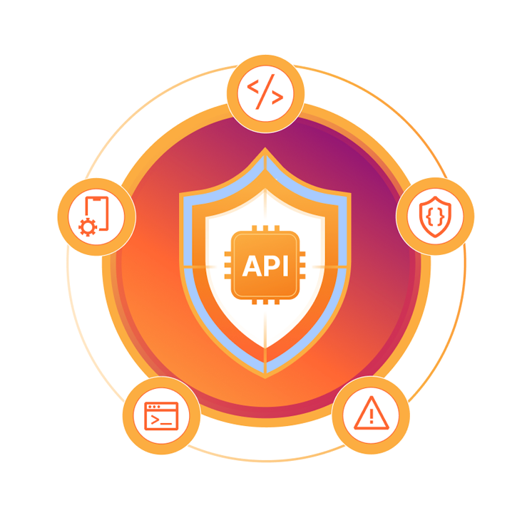

3.1 Recomendaciones para crear una Web API
Desarrollar una Web API robusta implica más que solo exponer rutas HTTP. Deben considerarse aspectos de seguridad, rendimiento, escalabilidad y experiencia del desarrollador. Aquí algunas recomendaciones esenciales:
- Usar HTTPS: Protege los datos transmitidos.
- Validar entradas: Toda entrada del usuario debe ser validada para evitar ataques.
- Documentación clara: Utiliza Swagger/OpenAPI para describir tu API.
- Control de errores: Devuelve códigos HTTP adecuados (400, 401, 404, 500).
- Versionamiento: Usa rutas como
/api/v1/para mantener la compatibilidad.

3.2 Proceso de desarrollo
A continuación, se muestra un proceso estructurado para desarrollar una Web API funcional, segura y escalable:
El primer paso es entender qué funcionalidades necesita tu aplicación. Por ejemplo, si desarrollas un sistema de reservación de vuelos, necesitarás recursos como "usuarios", "vuelos", "reservas", etc. Cada recurso debe tener operaciones CRUD (crear, leer, actualizar, eliminar).
Puedes usar frameworks como Express (Node.js), Spring Boot (Java), Django REST (Python) o Laravel (PHP). Lo importante es que el framework facilite la creación de rutas, controladores, middlewares y respuestas estándar.
Utiliza JWT para validar la identidad del usuario y establecer roles y permisos. El token debe enviarse en cada solicitud, normalmente en el encabezado Authorization como
Bearer <token>.
Prueba cada ruta con herramientas como Postman e implementa pruebas automatizadas. Documenta tu API con Swagger UI o Redoc para que otros desarrolladores puedan usarla fácilmente.